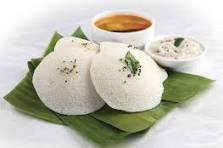

idli

Description
LSoft, fluffy, and steamed rice cakes made from fermented rice and urad dal batter
They are a popular South Indian breakfast item, often served with sambar (lentil soup) and coconut chutney.
Ingredients
- 1 cup urad dal (split black gram)
- 2 cups idli rice or parboiled rice
- 1/2 teaspoon fenugreek seeds (optional)
- Salt to taste
- Water as needed
Steps
- Soak Ingredients: Rinse the urad dal and rice separately. Soak them in water for at least 6 hours or overnight. Add fenugreek seeds to the urad dal while soaking.
- Grind Batter: Drain the soaked urad dal and rice. Grind the urad dal to a smooth, fluffy paste using a little water as needed. Grind the rice to a slightly coarse paste. Combine both pastes in a large bowl. Mix well, cover, and let it ferment in a warm place for 12-24 hours or until the batter doubles in volume and is slightly bubbly.
- Prepare Idlis: Grease idli molds with a little oil. Pour the fermented batter into the molds. Steam in an idli steamer or pressure cooker (without the pressure) for about 10-15 minutes or until a toothpick inserted comes out clean.
- Serve: Let the idlis cool slightly before removing them from the molds. Serve warm with sambar and coconut chutney.